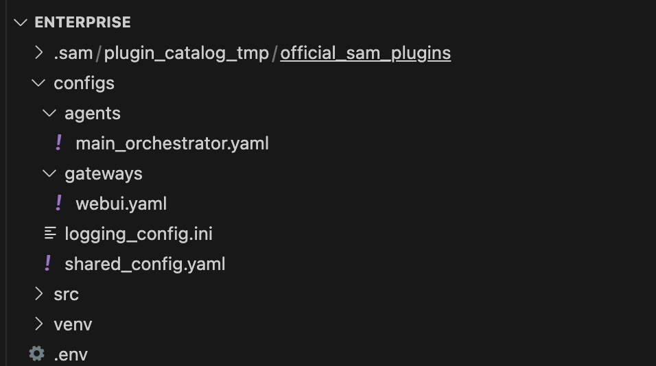
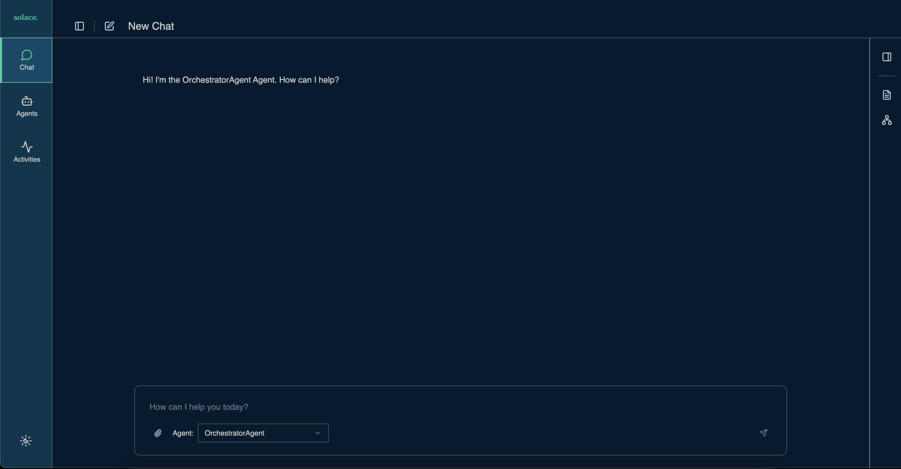

Welcome to the HQ AI Bootcamps to come up to speed with Solace Agent Mesh.
Follow the steps in this codelab to get started with the Enterprise Image for SAM.
- Download the enterprise image from https://products.solace.com/
- Load the image into your local docker
docker load -i path/to/solace-agent-mesh-enterprise-{version}.tar.gz
On successful loading, check the list of existing images
docker images
While you dont technically need the SAM cli to work with the enterprise edition, this will facilitate creating the files you need. We will make use of the scaffolding commands to initialize and create SAM components.
- Create working directory
mkdir sam-bootcamp cd sam-bootcamp - Setup Python virtual environment
python3.12 -m venv venv - Activate virtual environment
source venv/bin/activate - Install solace agent mesh
pip install solace-agent-mesh
In the same directory, run the following
sam init --gui

- From here, choose "Advanced Setup" to spin up an instance of the Agent Mesh that uses the Solace Broker as the communication backbone.
- Choose a namespace for your project

- Configure connection to the Solace Broker
- Configure your LLM endpoint, API Key, and Model name

- From the LLM Provider, chose
OpenAI Compatible Provider - Use
https://lite-llm.mymaas.netas your LLM Endpoint URL - If you do not have a token, ask Solace Chat to generate a token for you. Navigate to https://solacechat.mymaas.net/. Note: If that doesnt work use https://solacechatbeta.mymaas.net/
- Choose a model of choice. You can search for the model. Search for gpt and choose
azure-gpt-4o
- From the LLM Provider, chose
- Configure the orchestrator agent

- Configure the WebUI Gateway

Finalize the last steps and close the browser window when initialization is done.
Now back to your terminal window, lets investigate the directories. Open your directory in your favourite editor

configs: contains yaml config files- agents –> e.g.
main_orchestrator.yaml - gateways –> e.g.
webui.yaml
- agents –> e.g.
venv: contains all python packages.env: environment variables.sam: plugins templates
This step is involved with running SAM enterprise with the new files generated.
- Create a docker network bridge such that your SAM container can communicate with your Solace Broker container
docker network connect sam-network solace - Create a
docker-compose.yamlfile with the following content
Notes:services: sam-ent: image: solace-agent-mesh-enterprise:1.0.37 container_name: sam-ent platform: linux/amd64 # entrypoint: /bin/bash stdin_open: true # same as -it tty: true # same as -it volumes: - ./configs:/app/configs - ./.env:/app/.env - ./enterprise-logs:/app # Map the entire /app directory to enterprise-logs networks: - sam-network ports: - "0.0.0.0:8001:8001" # expose container port 8001 as port 8001 on host IP 0.0.0.0 networks: sam-network: external: true # reuse your existing network- Update the image
name:tagto what you your image is called. Executedocker imagesto get a list. platform: linux/amd64if you are running on macnetworks: sam-networkif you are attempting to connect to a local solace broker running on docker- We are passing the
configsdirectory and.envfile as volumes to the container - We are placing all the sam logs created in the container to a local directory called
enterprise-logs - the
networkssection could be removed if you skipped previous step of creating a docker bridge
- Update the image
- Create a directory called
enterprise-logsmkdir enterprise-logs - [Optional] Run local solace broker (alternatively: use Solace Cloud)
docker run -d -p 8080:8080 -p 55554:55555 -p 8008:8008 -p 8000:8000 -p 1883:1883 -p 5672:5672 -p 9000:9000 -p 2222:2222 --shm-size=2g --env username_admin_globalaccesslevel=admin --env username_admin_password=admin --name=solace solace/solace-pubsub-standard - Add the solace broker container to the same SAM network
docker network connect sam-network solace - Open
.envfile and make the following changesSOLACE_BROKER_URL="ws://solace:8008"- Update the broker URL to use the solace broker containerFASTAPI_HOST="0.0.0.0"- This where the webUI Gateway is hosted on the SAM Enterprise container. We change it to0.0.0.0to make sure its accessed by host IPFASTAPI_PORT="8001"- In case your solace broker has port 8000 exposed
.envfileLLM_SERVICE_ENDPOINT="https://lite-llm.mymaas.net" LLM_SERVICE_API_KEY="<llm_token_goes_here>" LLM_SERVICE_PLANNING_MODEL_NAME="openai/azure-gpt-4o" LLM_SERVICE_GENERAL_MODEL_NAME="openai/azure-gpt-4o" NAMESPACE="bootcamp/" SOLACE_BROKER_URL="ws://solace:8008" SOLACE_BROKER_VPN="default" SOLACE_BROKER_USERNAME="default" SOLACE_BROKER_PASSWORD="default" SOLACE_DEV_MODE="false" SESSION_SECRET_KEY="temp" FASTAPI_HOST="0.0.0.0" FASTAPI_PORT="8001" FASTAPI_HTTPS_PORT="8443" SSL_KEYFILE="" SSL_CERTFILE="" SSL_KEYFILE_PASSWORD="" ENABLE_EMBED_RESOLUTION="True" LOGGING_CONFIG_PATH="configs/logging_config.ini" S3_BUCKET_NAME="" S3_ENDPOINT_URL="" S3_REGION="us-east-1" WEB_UI_GATEWAY_DATABASE_URL="sqlite:////Users/tamimi/sam-bootcamp/data/webui_gateway.db" - Run docker compose
docker compose up - Open your browser and navigate to http://localhost:8001/
Try the following prompts:
Give me a list of all the agents in the system
What are the tools you have access to
When SAM runs, it configures a couple of queues with subscriptions.
- Navigate to your broker admin console (e.g. http://localhost:8080)
- Look at the created queues
- Look at the subscriptions on each queue
Now that you have a docker image running the enterprise edition of SAM, lets go ahead and add configuration files.
- From a new terminal window, navigate to your configs directory
cd sam-bootcamp/configs/agents - Add an agent file that leverages internal tools
curl https://raw.githubusercontent.com/SolaceLabs/solace-agent-mesh/refs/heads/main/examples/agents/a2a_agents_example.yaml -o a2a_agents.yaml - Restart the enterprise container
docker restart sam-ent
This file contains multiple agent configuration that leverages built-in tools. Go ahead and open this file lets inspect it. Here is an example section from the file
- name: markitdown_agent_app
app_base_path: .
app_module: solace_agent_mesh.agent.sac.app
broker:
<<: *broker_connection
# --- App Level Config ---
app_config:
namespace: ${NAMESPACE}
supports_streaming: true
agent_name: "MarkitdownAgent"
display_name: "Markdown Creator"
model: *multimodal_model # Or *planning_model, choose as appropriate
instruction: |
The MarkitdownAgent has the following capability:
* convert various file types (like PDF, DOCX, XLSX, HTML, CSV, PPTX, ZIP) to Markdown.
Any files you get that might be useful should be saved using create_artifact.
There is no need to provide a preview of the content in the response.
# --- Tools Definition ---
tools:
- tool_type: builtin
tool_name: "convert_file_to_markdown"
- tool_type: builtin-group
group_name: "artifact_management"
session_service:
type: "memory"
default_behavior: "PERSISTENT" # Or "RUN_BASED"
artifact_service:
type: "filesystem"
base_path: "/tmp/samv2"
artifact_scope: namespace
artifact_handling_mode: "reference"
enable_embed_resolution: true
enable_artifact_content_instruction: true
# --- Agent Card Definition ---
agent_card:
description: "An agent that converts various file types (like PDF, DOCX, XLSX, HTML, CSV, PPTX, ZIP) to Markdown format."
defaultInputModes: ["text", "file"] # Can take files as input
defaultOutputModes: ["text", "file"] # Outputs markdown file
skills:
- id: "convert_file_to_markdown"
name: "Markdown Converter"
description: "Converts various file types to Markdown format."
# --- Discovery & Communication ---
agent_card_publishing: { interval_seconds: 10 }
agent_discovery: { enabled: false }
inter_agent_communication:
allow_list: []
request_timeout_seconds: 60
Notes:
- Name of the agent is markitdown_agent_app
- Uses the
convert_file_to_markdownbuilt-in tool and theartifact_managementgroup of toolstools: - tool_type: builtin tool_name: "convert_file_to_markdown" - tool_type: builtin-group group_name: "artifact_management" - Configures the agent card by exposing the skills this agent is capable of doing:
skills: - id: "convert_file_to_markdown" name: "Markdown Converter" description: "Converts various file types to Markdown format." - Adds instructions to SAM on what this agent does
instruction: | The MarkitdownAgent has the following capability: * convert various file types (like PDF, DOCX, XLSX, HTML, CSV, PPTX, ZIP) to Markdown. Any files you get that might be useful should be saved using create_artifact. There is no need to provide a preview of the content in the response.
To add an MCP agent, we will simply define an agent yaml file with the basic configuration. In this step, we will go ahead and add a Google Maps MCP Agent.
Add Agent File
- Create a new file under
configs/agentscd configs/agents touch google_maps_mcp.yaml - Open that file and place the following content in the file
# Solace AI Connector: Agent Configuration Template log: stdout_log_level: INFO log_file_level: DEBUG log_file: a2a_agent.log !include ../shared_config.yaml apps: - name: "GoogleMaps__app" app_base_path: . app_module: solace_agent_mesh.agent.sac.app broker: <<: *broker_connection # App Level Config app_config: namespace: "${NAMESPACE}" # Your A2A topic namespace supports_streaming: true # Host capability flag agent_name: "GoogleMaps" # The model will be an alias like *planning_model, *general_model etc. # The python script will replace *general_model with the correct alias string. model: *general_model instruction: | # User-provided instruction TO BE FILLED tools: ## TO BE FILLED session_service: *default_session_service artifact_service: *default_artifact_service artifact_handling_mode: "embed" # How to handle artifacts enable_embed_resolution: true # Enable embed feature and instruction injection enable_artifact_content_instruction: true # Enable instruction for late-stage embed enable_builtin_artifact_tools: # Enable artifact tools and instruction injection enabled: true enable_builtin_data_tools: # Enable data analysis tools and instruction injection enabled: false data_tools_config: *default_data_tools_config # Use the default data tools config # Agent Card Definition agent_card: description: "TO BE FILLED" defaultInputModes: [text] defaultOutputModes: [text, file] skills: [] # Discovery & Communication agent_card_publishing: interval_seconds: 10 agent_discovery: enabled: true inter_agent_communication: allow_list: [""] deny_list: [] request_timeout_seconds: 180 - Update the
instructionsection with the followingYou are a Google Maps MCP server with the following capabilities: 1. Location Search - Search for places near a specific location with customizable radius and filters - Get detailed place information including ratings, opening hours, and contact details 2. Geocoding Services - Convert addresses to coordinates (geocoding) - Convert coordinates to addresses (reverse geocoding) 3. Distance & Directions - Calculate distances and travel times between multiple origins and destinations - Get detailed directions between two points with step-by-step instructions - Support for different travel modes (driving, walking, bicycling, transit) 4. Elevation Data - Retrieve elevation data for specific locations - Update the tools section with the following:
A couple of things to point out:tools: - group_name: artifact_management tool_type: builtin-group - group_name: general tool_type: builtin-group - connection_params: args: - -y - '@cablate/mcp-google-map' command: npx type: stdio environment_variables: GOOGLE_MAPS_API_KEY: ${GOOGLE_MAPS_API_KEY} tool_type: mcp- This Agent leverages two built-in tools
artifact_managementand thegeneralbuiltin-group - Also uses tools exposed by a local MCP server as configured via
tool_type: mcp - The MCP server runs locally as per the Google Maps MCP Agent Documentation
- An env var is required for this MCP server as defined in
environment_variables
- This Agent leverages two built-in tools
The final config file looks like this
log:
stdout_log_level: INFO
log_file_level: DEBUG
log_file: a2a_agent.log
!include ../shared_config.yaml
apps:
- name: "GoogleMaps__app"
app_base_path: .
app_module: solace_agent_mesh.agent.sac.app
broker:
<<: *broker_connection
# App Level Config
app_config:
namespace: "${NAMESPACE}" # Your A2A topic namespace
supports_streaming: true # Host capability flag
agent_name: "GoogleMaps"
# The model will be an alias like *planning_model, *general_model etc.
# The python script will replace *general_model with the correct alias string.
model: *general_model
instruction: | # User-provided instruction
You are a Google Maps MCP server with the following capabilities:
1. Location Search
- Search for places near a specific location with customizable radius and filters
- Get detailed place information including ratings, opening hours, and contact details
2. Geocoding Services
- Convert addresses to coordinates (geocoding)
- Convert coordinates to addresses (reverse geocoding)
3. Distance & Directions
- Calculate distances and travel times between multiple origins and destinations
- Get detailed directions between two points with step-by-step instructions
- Support for different travel modes (driving, walking, bicycling, transit)
4. Elevation Data
- Retrieve elevation data for specific locations
tools:
- group_name: artifact_management
tool_type: builtin-group
- group_name: general
tool_type: builtin-group
- connection_params:
args:
- -y
- '@cablate/mcp-google-map'
command: npx
type: stdio
environment_variables:
GOOGLE_MAPS_API_KEY: ${GOOGLE_MAPS_API_KEY}
tool_type: mcp
session_service: *default_session_service
artifact_service: *default_artifact_service
artifact_handling_mode: "embed" # How to handle artifacts
enable_embed_resolution: true # Enable embed feature and instruction injection
enable_artifact_content_instruction: true # Enable instruction for late-stage embed
enable_builtin_artifact_tools: # Enable artifact tools and instruction injection
enabled: true
enable_builtin_data_tools: # Enable data analysis tools and instruction injection
enabled: false
data_tools_config: *default_data_tools_config # Use the default data tools config
# Agent Card Definition
agent_card:
description: "Google Maps MCP server with the following capabilities: Location Search, Geocoding Services, Distance & Directions, Elevation Data."
defaultInputModes: [text]
defaultOutputModes: [text, file]
skills: []
# Discovery & Communication
agent_card_publishing:
interval_seconds: 10
agent_discovery:
enabled: true
inter_agent_communication:
allow_list: []
deny_list: []
request_timeout_seconds: 180
Add Env var
Edit your .env file to add a GOOGLE_MAPS_API_KEY
GOOGLE_MAPS_API_KEY="YOUR_API_KEY"
Restart Enterprise docker
docker restart sam-ent
Now navigate to your SAM instance on http://localhost:8001/ and see the new agent added
sam add agent --gui